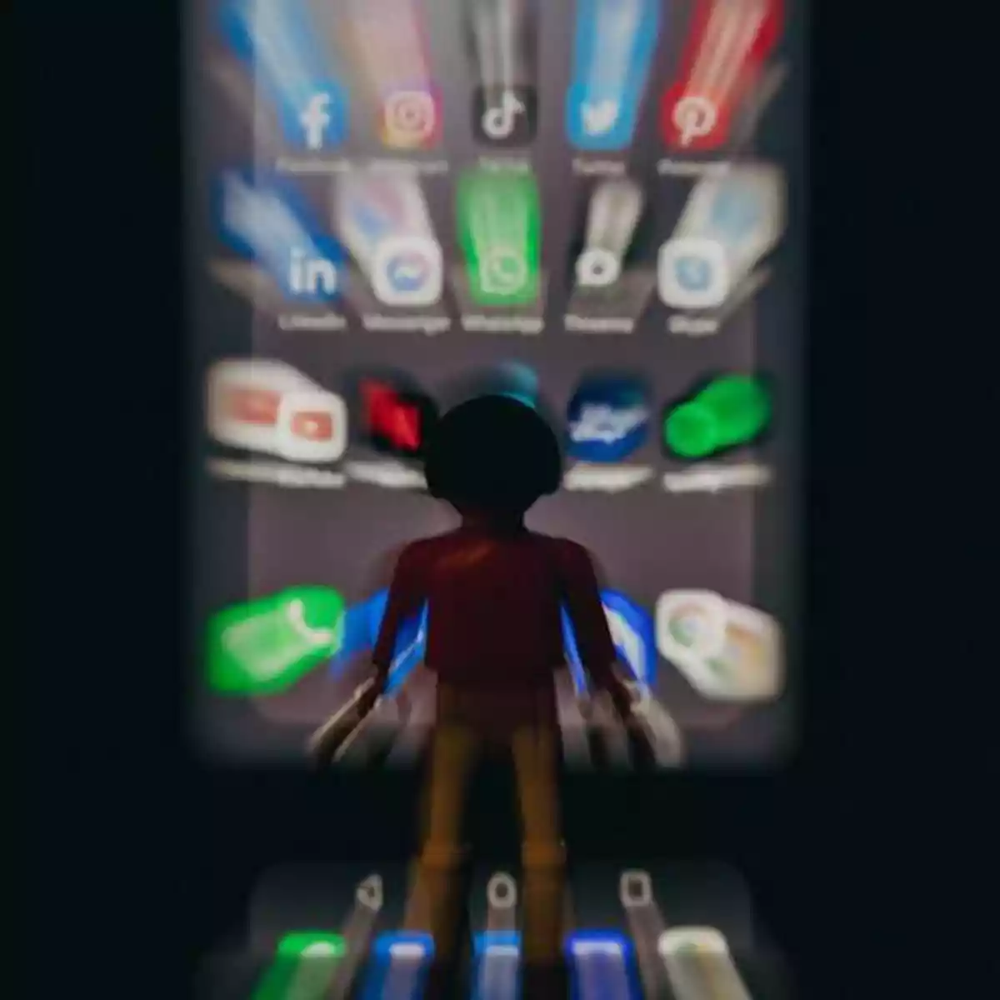

O Mal Uso da Internet e os Perigos dos Jogos Online
A internet é uma ferramenta poderosa que nos conecta e nos proporciona acesso a uma infinidade de informações e entretenimento. No entanto, seu uso inadequado pode levar a sérios problemas, especialmente no que diz respeito aos jogos online. A popularidade dos jogos virtuais cresceu exponencialmente nos últimos anos, atraindo milhões de jogadores de todas as idades. Apesar de oferecerem diversão e interação social, esses jogos também apresentam riscos significativos, como o vício, a exposição a conteúdos inadequados e o cyberbullying. O vício em jogos online é uma preocupação crescente, especialmente entre jovens. Muitas vezes, os jogadores perdem a noção do tempo e se isolam de suas atividades cotidianas, como estudos e relacionamentos pessoais. Esse comportamento pode levar a problemas de saúde mental, como ansiedade e depressão, além de impactar negativamente o desempenho acadêmico e profissional. A busca incessante por conquistas dentro do jogo pode gerar uma sensação de recompensa imediata, mas essa satisfação momentânea não substitui as interações reais e o desenvolvimento de habilidades sociais. Além disso, os jogos online muitas vezes expõem os jogadores a conteúdos inadequados e interações perigosas. Muitos jogos permitem a comunicação entre jogadores desconhecidos, o que pode resultar em situações de assédio ou cyberbullying. Jogadores podem ser alvo de comentários maldosos ou ameaças, criando um ambiente hostil que afeta a autoestima e o bem-estar emocional. É fundamental que pais e responsáveis estejam atentos ao tipo de conteúdo acessado pelos jovens e incentivem um uso saudável da internet, promovendo conversas abertas sobre os riscos envolvidos. Em resumo, embora os jogos online possam ser uma forma divertida de entretenimento, é crucial reconhecer os potenciais perigos associados ao seu uso excessivo. O vício em jogos e a exposição a comportamentos tóxicos são questões que precisam ser abordadas com seriedade. É importante cultivar um equilíbrio saudável entre o mundo virtual e as interações da vida real, garantindo que a internet seja utilizada como uma ferramenta positiva em vez de um espaço prejudicial.

imagem o mal uso das redes socias

Mídia
Lista de Tarefas
- Tarefa 1
- Tarefa 2
- Tarefa 3
Tabela Exemplo
| Nome | Idade |
|---|---|
| Luzia Grazielly Gomes de Carvalho | 19 |